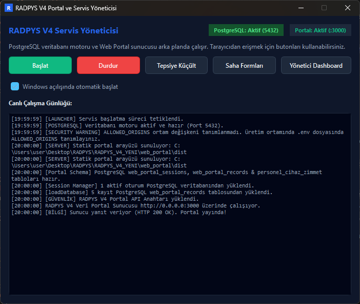
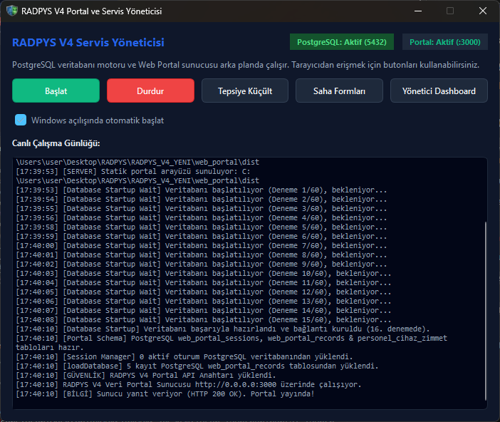
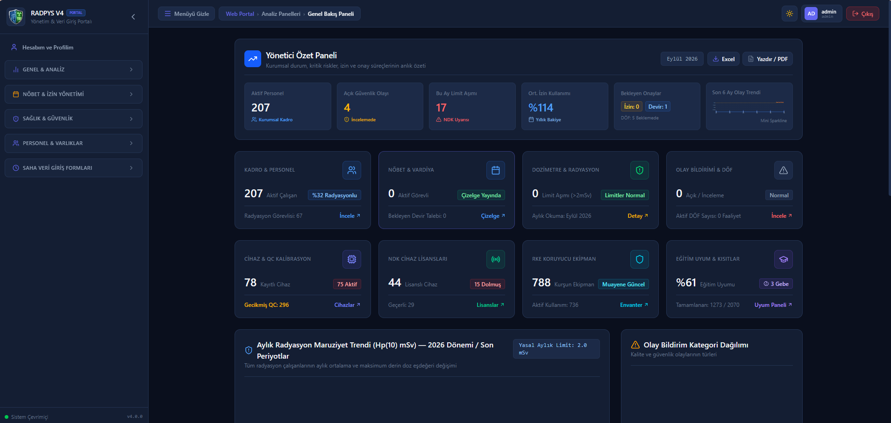

Web Portalı ve Yönetici Gösterge Panelleri (Dashboards)
Tüm radyoloji ve radyasyon güvenliği operasyonunu (dozimetre kritik aşımları, aktif nöbetler, açık arızalar, DIN 6857-1 KKD muayeneleri, SKS denetim hazırlığı ve yasal kurumsal uyumu) tek merkezde toplayan, masaüstü durum çubuğundan 8 saniyede bir sağlık denetimi yapılan ve 60 saniyelik bellek içi önbellekle (In-Memory Cache) çalışan kurumsal karar destek merkezidir.
Kısa Reçete (20 Saniye Kuralı)
Tüm hastane radyoloji birimlerinin anlık nöbet doluluğunu, dozimetre kritik aşım alarmlarını, bekleyen DÖF ve arıza durumlarını tek ekranda incelemek.
Masaüstü ana ekranında sol üstteki [Genel Bakış] butonuna tıklayın (veya [Ctrl+K] ile arayın). Sunucu kapalıysa durum çubuğundaki [Portal Sunucu: Kapalı] butonuna basarak tek tıkla çalıştırın.
Sistem varsayılan tarayıcınızda http://localhost:3000/dashboard/genel sayfasını açar. 60 saniyelik bellek içi önbellek sayesinde veritabanı kilitlenmez, ağır sorgular saniyeler içinde yüklenir.
Kritik Sahada Yanlış Bilinen Kurallar (Mit Avcısı)
5N1K Kural ve Ayar Çözümleme Tablosu
Masaüstü entegrasyonu, web gösterge panelleri ve operasyonel alarm eşiklerinin kuralları.
Web Portal ve Dashboard Mimari Akış Şeması (Mermaid)
Aşağıdaki şema, masaüstü uygulamasının portal sunucusunu denetlemesinden tarayıcıda canlı gösterge panellerinin yüklenmesine kadar olan mimari entegrasyonu göstermektedir.
Ekran Konumları ve Görsel Rehber



Adım Adım Eylem Akışı
- Nöbet Yönetimi: Kurumsal nöbet matrisi, poliklinik vardiyaları, kısıt ihlalleri ve adalet katsayıları.
- Dozimetre Takibi: 2 mSv ve 5 mSv aşım alarmları, DÖF aksiyonları ve RDF-43 araştırma formları.
- Denetim Panosu: Sağlık Bakanlığı SKS ve NDK denetim hazırlık eksiklik kontrol listesi.
- Cihaz & RKE: Lisans vize süreleri, bakım gecikmeleri ve DIN 6857-1 kurşun ekipman muayeneleri.
Hibrit Platform Karşılaştırması (Masaüstü & Web)
Masaüstü Uygulaması (PySide6)
- • Sunucu Yönetimi: Durum çubuğunda Node.js Port 3000 sağlık kontrolü ve arka plan launcher tetikleme.
- • Hızlı Köprü: Tek tıkla varsayılan tarayıcıda yönetici kokpitini açma yetkisi.
- • Gelişmiş Solver & Rapor: Nöbet dağıtım motorunu çalıştırma, Excel toplu içe aktarım ve şifreli evrak kasası yönetimi.
Web Portalı & PWA (React 18 + Vite)
- • 20 Analitik Dashboard: Dozimetre, nöbet devir, SKS denetim, RKE ve ortam dozu göstergeleri.
- • Mobil / Tablet Uyumu: Kurum içindeki telefon ve tabletlerden duyarlı (responsive) anlık veri takibi.
- • Yüksek Performans: 60 saniyelik bellek içi önbellek ile anında grafik yükleme ve rapor dökümü.
Hata Mesajları ve Sorun Giderme Rehberi
Sıkça Sorulan Sorular (SSS)
Web Portal sunucusunu başlatma yetkisi kimdedir?
Kurumsal güvenlik kuralı gereğince durum çubuğundaki başlatıcı tetikleme yetkisi yalnızca Sistem Yöneticisi (Admin) rolüne aittir. Normal kullanıcılar ve teknikerler açık olan portali tarayıcıdan izleyebilir ancak arka plan sunucu sürecini başlatamaz veya durduramaz.
60 saniyelik önbellek süresi verilerin gecikmesine yol açar mı?
Hayır. 60 saniyelik TTL (Time-to-Live), yüzlerce personelin aynı anda gösterge panellerini açtığı kurumsal hastane ağlarında veritabanı kilitlenmelerini önleyen endüstriyel bir standarttır. Kritik bir veri girişi yapıldığında paneldeki [Yenile] butonuna basılarak önbellek anında geçersiz kılınabilir ve canlı veri çekilebilir.
Web Gösterge Panellerine cep telefonu veya tabletten erişilebilir mi?
Evet. RADPYS Web Portalı modern duyarlı (responsive) React mimarisinde geliştirilmiştir. Hastane yerel Wi-Fi ağına bağlı tabletler ve akıllı telefonlar üzerinden yetkili kullanıcı girişi yapılarak tüm paneller ve grafikler tam ekran olarak incelenebilir.
İnternet bağlantısı kesildiğinde Web Portal çalışmaya devam eder mi?
Portal Başlatıcı üzerindeki [Web Portalı Aç] butonu hangi tarayıcıyı kullanır?
Kullanıcının işletim sisteminde varsayılan olarak belirlediği güncel web tarayıcısı (Google Chrome, Mozilla Firefox, Brave vb.) otomatik olarak açılır. Yalnızca kısıtlı kurumsal konteyner veya izole güvenlik ortamlarında (Windows Sandbox gibi) protokol uyumluluğunu korumak amacıyla Microsoft Edge yedeği devreye girer.